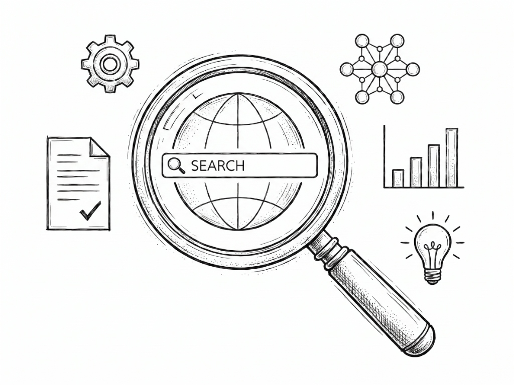

Research & Creative Sparring Partner
Before generating a single pixel or burning GPU credits, we bring in frontier LLMs as our sharpest sparring partner. We do deep dives into consumer analytics, dissect competitor campaigns, test cultural angles, and challenge creative treatments until only the strongest concept survives.
